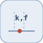

Block type: prelookup
| Parameter | Description |
|---|---|
| input ports | 1 input port(s) declared. |
| Parameter | Description |
|---|---|
| output ports | 1 output port(s) declared. |
Computes the interval index k and fraction f for a shared breakpoint search.
| Module | nflow_blocks |
| Library | Lookup Tables |
| Type | prelookup |
| Label | Prelookup |
Description
Given a scalar input u and the strictly increasing BreakpointsForDimension1 vector, computes the interval index k with bp[k] <= u < bp[k+1] and the fraction f = (u - bp[k]) / (bp[k+1] - bp[k]). The output is the 2-element vector [k, f], which one or more interpolationPrelookup blocks can reuse to interpolate several tables without repeating the interval search.
Out-of-range inputs are clipped: below the first breakpoint gives [0, 0]; at or above the last gives [N-2, 1]. Code generation is supported for C and Rust (the vector-expansion pass lowers the block into scalar helpers).
Ports
Input(s)
| Port | Role | Side | Position |
|---|---|---|---|
| Port_1 | Numeric signal read by the block. | left | x=0, y=40 |
Output(s)
| Port | Role | Side | Position |
|---|---|---|---|
| Port_1 | Numeric signal produced by the block. | right | x=90, y=40 |
Parameters
| Parameter | Default value |
|---|---|
BreakpointsForDimension1 |
[0 1 2 3 4] |
Block Characteristics
| Block type | prelookup |
| Family | Lookup Tables |
| Rendered size | 90 x 80 |
| Phases | ALGEBRAIC |
| Internal state or history | no |
| Signal data type | double numeric values |
Algorithms
Equation or Rule
$$k : b_k \le u < b_{k+1},\quad f = \frac{u - b_k}{b_{k+1} - b_k}$$Extended Capabilities
Code generation: supported for C and Rust.
Implementation Sources
d.blocks={ struct('id','c','type','constant','inputs',0,'outputs',1,'params',struct('Value',2.5)), struct('id','pl','type','prelookup','inputs',1,'outputs',1,'params',struct('BreakpointsForDimension1',[0 1 2 3 4])), struct('id','ip','type','interpolationPrelookup','inputs',1,'outputs',1,'params',struct('Table',[0 1 4 9 16])), struct('id','w','type','toWorkspace','inputs',1,'outputs',0,'params',struct('VariableName','y','SaveFormat','Array')) };
d.connections={ struct('from','c','to','pl','fromIndex',0,'toIndex',0), struct('from','pl','to','ip','fromIndex',0,'toIndex',0), struct('from','ip','to','w','fromIndex',0,'toIndex',0) };
d.sampleTime=0.1; d.duration=0.2; d.solver='discrete'; d.variables=struct();
r=jsondecode(__nflow_simulate__(jsonencode(d)));| Version | Description |
|---|---|
| 1.0.0 | initial version |